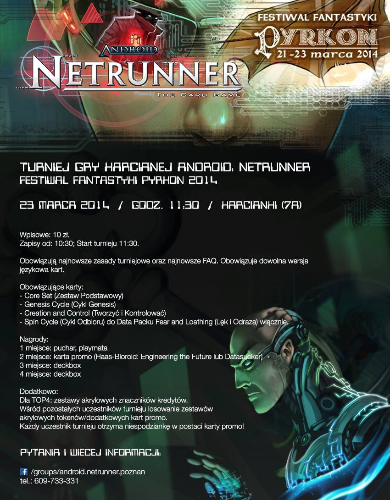

Pyrkon 2014 (23.03.2014).
25 graczy, 5 rund swiss, rundy 60 minut, brak topa.
Od organizatora
{kind=link}
Chciałem bardzo serdecznie podziękować za przybycie i dobrą zabawę wszystkim uczestnikom wczorajszego turnieju na Pyrkonie w Poznaniu. Frekwencja 25 osób to jak na naszą - niestety w dalszym ciągu dość niszową - grę bardzo dobry wynik i mam nadzieję, że będzie to norma na większych turniejach w naszym mieście. Ze strony organizacyjnej szczególne podziękowania kieruję do Marka Talbierza za ogarnięcie banerków promujących turniej, ogarnięcie nagrywania co ciekawszych gier i ogólną pomoc przy organizacji. Dziękuję również Kacprowi Chomiczowi za namówienie mnie do zorganizowania tego turnieju oraz za zorganizowanie dofinansowania części nagród Dziękuję również wszystkim tym bez których przedłużaczy, drukarek itd. nie wyszłoby wszystko tak jak wyszło Myślę, że Poznań z całą pewnością nie powiedział ostatniego słowa jeśli chodzi o organizację większych turniejów, za co zabierzemy się gdy tylko zorganizujemy jakąś przyzwoitą większą salę co mam nadzieję nastąpi już niedługo.
Kuba M.
Wyniki
Rundy
Metagame
Korp: - 11 NBN (6 MN vs 5 TWIY) - 6 HB (5 ETF vs 1 CI) - 5 Weyland (5 BaBW vs 1 GRNDL) - 3 Jinteki (2 RP vs 1 PE) Runner: - 9 Criminal (6 Andy vs 3 Gabe) - 9 Shaper (5 CT vs 3 Kit vs 1 Kate) - 7 Anarch (4 Reina vs 3 Noise)
Stats
Corp

Runner